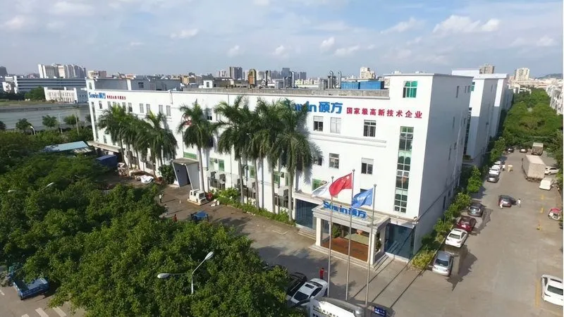
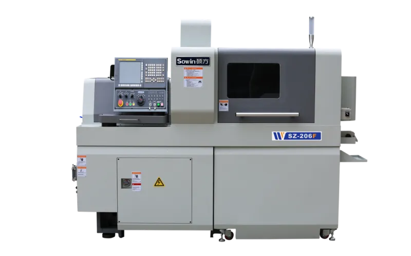
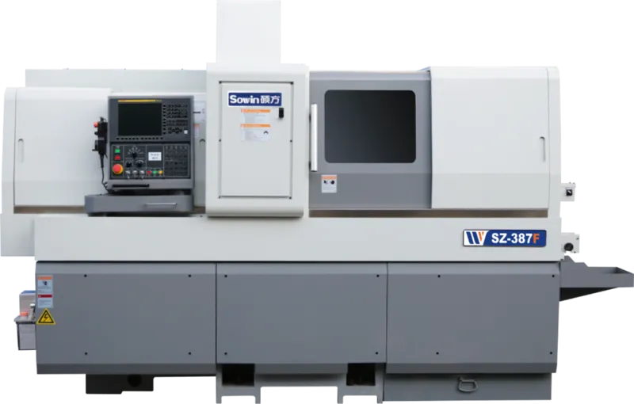
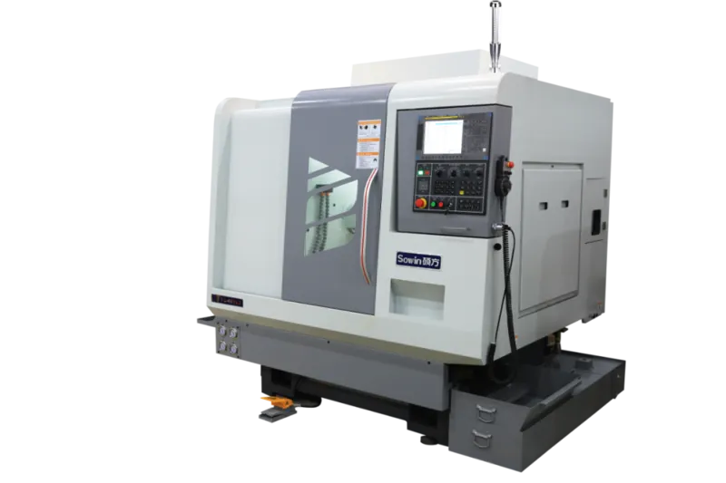

展商推荐 | 深圳硕方邀您参观第20届郑州工博会
首页 / 展商推荐 | 深圳硕方邀您参观第20届郑州工博会
优质展商推荐
第20届郑州工博会
将于2024年5月9-12日
在郑州国际会展中心举办，
深圳市硕方精密机械有限公司作为
中高端小型精密数控机床制造与服务提供商
将携高精密数控走心机和车铣复合机床
精彩亮相本次展会！
展位号：C-T025
邀请您莅临展位参观！

企业简介
深圳市硕方精密机械有限公司，创立于 2010 年，是集研发、制造、销售与服务为一体的国家级高新技术企业！硕方专注于小型精密数控机床领域，先后获得深圳机械 30 年智能装备标杆产品奖，改革开放 40 周年优秀品牌奖，产品远销美国、意大利、乌克兰、马来西亚、泰国等海外地区！硕方始终坚持“科技领先”的发展战略，追踪全球领先的设计技术，力求使产品达到性能与效能的高度融合，为航空航天、新能源汽车、5G、3C、医疗器械、智能家电、五金、电动工具等行业提供高效加工解决方案！
行业专家级的研发团队，占营业额 10%以上的研发投入，让硕方始终保持着行业领先的技术优势，先后获得 40 多项发明专利和实用新专利，形成了丰富的产品系列，全系列产品通过欧洲 CE 认证。目前，硕方已形成精密数控走心机、车铣复合加工中心、动力刀塔式车削中心三大产品阵列，满足日益增长的超精密零件复合加工的市场需求。
硕方，将始终坚持“以品质求生存，以管理求效益，以创新求发展”的经营理念，立志成为国际一流的高端小型精密数控机床制造商与服务商！
参展产品
双主轴走心机
SZ-206F

● 全新设计的机座，借助有限元分析（FEA）进行优化设计，在满足高刚性、高精密加工的同时，在吸收振动、减少共振方面效果明显；
● 各移动支撑件坚持轻量化的设计原则，在轻量化的同时，又满足高刚性，高精度的要求，以提高机床的动态响应，实现节能省材；
● 主背轴具备完全的车铣复合加工能力，丰富且灵活多样的刀具配置，为加工各种复杂零件提供更优化的加工工艺方案；主背轴同时加工，缩短加工节拍，极大的提高了加工效率；
● 采用电机驱动旋转导套结构，实现高速、高精度加工，有导套与无导套灵活切换；
● 内藏式油冷电主轴，结构紧凑、重量轻、惯性小、噪声低、响应快、易于实现定位；
● 采用倾斜型刀架台结构设计，在具备高刚性特点的同时，又延长了刀具寿命，提高了连续加工的稳定性和精度。
双主轴走心机
SZ-387F

●继承了F系列32/38走心机的机械结构优点，加装了自动B轴转台
●B轴控制动力刀具单元
采用进口减速机，刚性高，性能稳定
旋转角度：0°~150°，可进行任意角度调节和加工
最高转速：Max4200rpm
动力刀具：前4XER16+后4×ER11
●通过CAD/CAM模拟软件可进行复杂的B轴加工
●刀具丰富，最多可装40把刀
●B轴控制，实现了主背轴刀具的共有化
车铣复合
SC-46YD

●整体式高品质铸铁床身，30°斜床身结构设计，低重心，且床身结构经过有限元分析，采用加强筋结构，使整机具备高刚性和优良的抗震性能。
●导轨采用高性能滚柱导轨，超重负荷加长型滑块，使之具备高精度、快速移动、低磨耗等优异特性。
●丝杠采用高精度C3研磨级滚珠丝杠，重载型双螺母，丝杠做固定预拉伸，保证出色的刚性、机床精度和热稳定性。
●主轴采用高精度P4级角接触球轴承，前三后二的重负荷设计组合，有效确保刚性和精度。
●刀塔采用伺服马达驱动，可就近换刀，换刀速度快。刀塔锁紧为油压锁定，锁紧力強，刀塔稳定性高，实现刀塔高刚性及高精度特点。
锁定黄金五月，抢占中部市场！